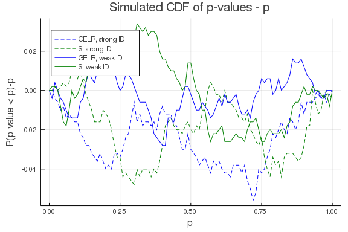

This work is licensed under a Creative Commons Attribution-ShareAlike 4.0 International License
About this document¶
This document was created using Weave.jl. The code is available in on github. The same document generates both static webpages and associated jupyter notebook.
Empirical likelihood¶
An interesting alternative to GMM is (generalized) empirical likelihood (GEL). Empirical likelihood has some appealing higher-order statistical properties. In particular, it can be shown to have lower higher order asymptotic bias than GMM. See Newey and Smith (2004)1. Relatedly, certain test statistics based on EL are robust to weak identification (Guggenberger and Smith 2005)2. In fact, the identification robust tests that we have discusses are all based on the CUE-GMM objective function. The CUE-GMM objetive is a special case of generalized empirical likelihood.
A perceived downside of GEL is that it involves a more difficult looking optimization problem than GMM. However, given the ease with which Julia can solve high dimensional optimization problems, GEL is very feasible.
As in the extremum estimation notes, suppose we have moment conditions such that where $g_i:\R^d \to \R^k$ are some data dependent moment conditions. The empirical likelihood estimator solves
Generalized empirical likelihood replaces $\log(p)$ with some other convex function $h(p)$, setting $h(p) = \frac{1}{2}(p^2-(1/n)^2)$ results in an estimator identical to the CUE-GMM estimator.
A common approach to computing GEL estimators is to eliminate $\pi$ by looking at the dual problem where $\rho$ is some function related to $h$. See Newey and Smith (2004)1 for details. There can be some analytic advantages to doing so, but computationally, the original statement of the problem has some advantages. First, there is more existing software for solving constrained minimization problems than for solving saddle point problems. Second, although $p$ is high dimensional, it enters the constraints linearly, and the objective function is concave. Many optimization algorithms will take good advantage of this.
Let’s look at some Julia code. Since the problem involves many variables with linear constraints, it is worthwhile to use JuMP for optimization. The code is slightly more verbose, but the speed of JuMP (and the Ipopt solver) are often worth it.
using GMMInference, JuMP, Ipopt, LinearAlgebra, Distributions #, KNITRO
n = 300
d = 4
k = 2*d
β0 = ones(d)
π0 = vcat(I,ones(k-d,d))
ρ = 0.5
data = IVLogitShare(n, β0, π0, ρ);
# set up JuMP problem
Ty = quantile.(Logistic(),data.y)
m = Model()
@variable(m, 0.0 <= p[1:n] <= 1.0)
@variable(m, θ[1:d])
@constraint(m, prob,sum(p)==1.0)
@constraint(m, momentcon[i=1:k], dot((Ty - data.x*θ).*data.z[:,i],p)==0.0)
@NLobjective(m,Max, sum(log(p[i]) for i in 1:n))
m
A JuMP Model
Maximization problem with:
Variables: 304
Objective function type: Nonlinear
`GenericAffExpr{Float64,VariableRef}`-in-`MathOptInterface.EqualTo{Float64}
`: 1 constraint
`GenericQuadExpr{Float64,VariableRef}`-in-`MathOptInterface.EqualTo{Float64
}`: 8 constraints
`VariableRef`-in-`MathOptInterface.GreaterThan{Float64}`: 300 constraints
`VariableRef`-in-`MathOptInterface.LessThan{Float64}`: 300 constraints
Model mode: AUTOMATIC
CachingOptimizer state: NO_OPTIMIZER
Solver name: No optimizer attached.
Names registered in the model: momentcon, p, prob, θ
The gel_jump_problem function from GMMInference.jl does the same
thing as the above code cell.
Let’s solve the optimization problem.
set_optimizer(m, with_optimizer(Ipopt.Optimizer, print_level=5))
set_start_value.(m[:θ], 0.0)
set_start_value.(m[:p], 1/n)
optimize!(m)
This is Ipopt version 3.12.10, running with linear solver mumps.
NOTE: Other linear solvers might be more efficient (see Ipopt documentation
).
Number of nonzeros in equality constraint Jacobian...: 21900
Number of nonzeros in inequality constraint Jacobian.: 0
Number of nonzeros in Lagrangian Hessian.............: 9900
Total number of variables............................: 304
variables with only lower bounds: 0
variables with lower and upper bounds: 300
variables with only upper bounds: 0
Total number of equality constraints.................: 9
Total number of inequality constraints...............: 0
inequality constraints with only lower bounds: 0
inequality constraints with lower and upper bounds: 0
inequality constraints with only upper bounds: 0
iter objective inf_pr inf_du lg(mu) ||d|| lg(rg) alpha_du alpha_p
r ls
0 1.3815514e+03 1.46e+01 1.14e-13 -1.0 0.00e+00 - 0.00e+00 0.00e+0
0 0
1 1.7112320e+03 3.21e+00 5.26e+01 -1.0 3.54e-01 - 1.00e+00 1.00e+0
0h 1
2 1.7117181e+03 1.05e-01 3.27e+01 -1.0 7.09e-01 - 1.00e+00 1.00e+0
0h 1
3 1.7179056e+03 1.65e-02 7.78e+03 -1.0 1.81e-02 - 1.00e+00 8.45e-0
1h 1
4 1.7179273e+03 3.21e-04 5.58e+03 -1.0 2.29e-02 - 1.00e+00 1.00e+0
0h 1
5 1.7173801e+03 1.34e-05 1.80e+03 -1.0 2.87e-03 - 7.69e-01 1.00e+0
0f 1
6 1.7167139e+03 1.31e-06 1.27e+03 -1.0 8.63e-04 - 1.00e+00 1.00e+0
0f 1
7 1.7163461e+03 2.34e-06 3.31e+02 -1.0 8.00e-04 - 8.54e-01 1.00e+0
0f 1
8 1.7160079e+03 1.14e-05 2.26e+02 -1.0 1.75e-03 - 1.00e+00 1.00e+0
0f 1
9 1.7159260e+03 5.56e-06 2.41e+01 -1.0 1.22e-03 - 1.00e+00 1.00e+0
0f 1
iter objective inf_pr inf_du lg(mu) ||d|| lg(rg) alpha_du alpha_p
r ls
10 1.7159068e+03 3.87e-06 7.95e+00 -1.0 1.02e-03 - 1.00e+00 1.00e+0
0f 1
11 1.7159064e+03 3.26e-08 4.58e-02 -1.0 9.29e-05 - 1.00e+00 1.00e+0
0h 1
12 1.7159064e+03 2.01e-11 1.46e-04 -2.5 2.38e-06 - 1.00e+00 1.00e+0
0h 1
13 1.7159064e+03 1.66e-12 1.16e-06 -3.8 6.91e-07 - 1.00e+00 1.00e+0
0h 1
14 1.7159064e+03 3.20e-15 5.26e-10 -5.7 5.71e-09 - 1.00e+00 1.00e+0
0h 1
15 1.7159064e+03 7.83e-15 1.87e-13 -8.6 4.61e-12 - 1.00e+00 1.00e+0
0h 1
Number of Iterations....: 15
(scaled) (unscaled)
Objective...............: 5.7196881415830057e+02 1.7159064424749017e+0
3
Dual infeasibility......: 1.8650257814484652e-13 5.5950773443453955e-1
3
Constraint violation....: 7.8288070470833304e-15 7.8288070470833304e-1
5
Complementarity.........: 2.5059035954787719e-09 7.5177107864363162e-0
9
Overall NLP error.......: 2.5059035954787719e-09 7.5177107864363162e-0
9
Number of objective function evaluations = 16
Number of objective gradient evaluations = 16
Number of equality constraint evaluations = 16
Number of inequality constraint evaluations = 0
Number of equality constraint Jacobian evaluations = 16
Number of inequality constraint Jacobian evaluations = 0
Number of Lagrangian Hessian evaluations = 15
Total CPU secs in IPOPT (w/o function evaluations) = 0.034
Total CPU secs in NLP function evaluations = 0.002
EXIT: Optimal Solution Found.
@show value.(m[:θ])
value.(m[:θ]) = [0.9650412595889161, 0.9115129048088186, 1.046196277071065,
1.0230179037490397]
@show value.(m[:p][1:10])
value.((m[:p])[1:10]) = [0.0033473036890868248, 0.0028221841915037345, 0.00
399383490358482, 0.003908544657297463, 0.0033054462960892287, 0.00277923197
81302388, 0.004151394587894499, 0.003338555887961314, 0.003435402189611027,
0.003231317185091706]
10-element Array{Float64,1}:
0.0033473036890868248
0.0028221841915037345
0.00399383490358482
0.003908544657297463
0.0033054462960892287
0.0027792319781302388
0.004151394587894499
0.003338555887961314
0.003435402189611027
0.003231317185091706
For comparison here is how long it takes JuMP + Ipopt to solve for the CUE-GMM estimator.
@show mcue = gmm_jump_problem(data, cue_objective)
mcue = gmm_jump_problem(data, cue_objective) = A JuMP Model
Minimization problem with:
Variables: 4
Objective function type: Nonlinear
Model mode: AUTOMATIC
CachingOptimizer state: NO_OPTIMIZER
Solver name: No optimizer attached.
Names registered in the model: θ
set_start_value.(mcue[:θ], 0.0)
set_optimizer(mcue, with_optimizer(Ipopt.Optimizer,print_level=5))
optimize!(mcue)
This is Ipopt version 3.12.10, running with linear solver mumps.
NOTE: Other linear solvers might be more efficient (see Ipopt documentation
).
Number of nonzeros in equality constraint Jacobian...: 0
Number of nonzeros in inequality constraint Jacobian.: 0
Number of nonzeros in Lagrangian Hessian.............: 0
Total number of variables............................: 4
variables with only lower bounds: 0
variables with lower and upper bounds: 0
variables with only upper bounds: 0
Total number of equality constraints.................: 0
Total number of inequality constraints...............: 0
inequality constraints with only lower bounds: 0
inequality constraints with lower and upper bounds: 0
inequality constraints with only upper bounds: 0
iter objective inf_pr inf_du lg(mu) ||d|| lg(rg) alpha_du alpha_p
r ls
0 1.5017873e+02 0.00e+00 8.00e+00 0.0 0.00e+00 - 0.00e+00 0.00e+0
0 0
1 1.1791449e+02 0.00e+00 6.74e+00 -11.0 8.00e+00 - 1.00e+00 1.00e+0
0f 1
2 1.0245339e+02 0.00e+00 2.35e+00 -11.0 7.05e+00 - 1.00e+00 1.00e+0
0f 1
3 9.8817655e+01 0.00e+00 1.79e+00 -11.0 8.54e-01 - 1.00e+00 1.00e+0
0f 1
4 9.6280433e+01 0.00e+00 7.26e-01 -11.0 3.06e+00 - 1.00e+00 5.00e-0
1f 2
5 9.6073768e+01 0.00e+00 2.27e-01 -11.0 3.38e-01 - 1.00e+00 1.00e+0
0f 1
6 9.5997262e+01 0.00e+00 1.81e-01 -11.0 1.59e-01 - 1.00e+00 1.00e+0
0f 1
7 9.2117282e+01 0.00e+00 1.53e+00 -11.0 5.18e+00 - 1.00e+00 1.00e+0
0f 1
8 9.0184383e+01 0.00e+00 2.50e+00 -11.0 1.13e+01 - 1.00e+00 5.00e-0
1f 2
9 8.3885855e+01 0.00e+00 1.23e+00 -11.0 3.19e+00 - 1.00e+00 1.00e+0
0f 1
iter objective inf_pr inf_du lg(mu) ||d|| lg(rg) alpha_du alpha_p
r ls
10 7.8753855e+01 0.00e+00 7.12e-01 -11.0 4.98e+00 - 1.00e+00 1.00e+0
0f 1
11 7.3786829e+01 0.00e+00 5.43e-01 -11.0 8.27e+00 - 1.00e+00 1.00e+0
0f 1
12 7.3383201e+01 0.00e+00 2.14e-01 -11.0 8.31e-01 - 1.00e+00 1.00e+0
0f 1
13 7.3259812e+01 0.00e+00 5.66e-02 -11.0 9.43e-01 - 1.00e+00 1.00e+0
0f 1
14 7.3253806e+01 0.00e+00 1.80e-02 -11.0 1.98e-01 - 1.00e+00 1.00e+0
0f 1
15 7.3251468e+01 0.00e+00 1.50e-02 -11.0 1.61e-01 - 1.00e+00 1.00e+0
0f 1
16 7.3250051e+01 0.00e+00 4.10e-02 -11.0 1.86e+00 - 1.00e+00 1.25e-0
1f 4
17 7.3236121e+01 0.00e+00 7.34e-02 -11.0 1.49e+00 - 1.00e+00 1.00e+0
0f 1
18 7.3214047e+01 0.00e+00 3.11e-01 -11.0 6.24e+00 - 1.00e+00 1.00e+0
0f 1
19 7.3173566e+01 0.00e+00 4.16e-01 -11.0 2.27e+03 - 1.00e+00 1.95e-0
3f 10
iter objective inf_pr inf_du lg(mu) ||d|| lg(rg) alpha_du alpha_p
r ls
20 7.3141400e+01 0.00e+00 2.54e+00 -11.0 3.33e+01 - 1.00e+00 2.50e-0
1f 3
21 7.2803457e+01 0.00e+00 4.19e+00 -11.0 2.60e+00 - 1.00e+00 5.00e-0
1f 2
22 7.1818743e+01 0.00e+00 3.38e+01 -11.0 8.96e+01 - 1.00e+00 3.12e-0
2f 6
23 7.1434089e+01 0.00e+00 1.10e+02 -11.0 4.14e+03 - 1.00e+00 2.44e-0
4f 13
24 7.1045697e+01 0.00e+00 1.34e+02 -11.0 2.03e+04 - 1.00e+00 1.53e-0
5f 17
25 7.0945151e+01 0.00e+00 1.36e+02 -11.0 6.33e+02 - 1.00e+00 1.22e-0
4f 14
26 6.9372344e+01 0.00e+00 7.97e+01 -11.0 2.79e+00 - 1.00e+00 1.25e-0
1f 4
27 6.4330369e+01 0.00e+00 1.35e+02 -11.0 7.36e-01 - 1.00e+00 5.00e-0
1f 2
28 6.3048990e+01 0.00e+00 1.15e+02 -11.0 1.38e+00 - 1.00e+00 6.25e-0
2f 5
29 5.6321262e+01 0.00e+00 9.18e+01 -11.0 2.92e-01 - 1.00e+00 1.00e+0
0f 1
iter objective inf_pr inf_du lg(mu) ||d|| lg(rg) alpha_du alpha_p
r ls
30 3.6702248e+01 0.00e+00 1.99e+02 -11.0 6.65e+00 - 1.00e+00 3.12e-0
2f 6
31 3.0130780e+01 0.00e+00 2.42e+02 -11.0 7.02e-01 - 1.00e+00 2.50e-0
1f 3
32 2.2440927e+01 0.00e+00 6.60e+01 -11.0 4.01e-01 - 1.00e+00 1.00e+0
0f 1
33 1.7815035e+01 0.00e+00 1.95e+02 -11.0 7.83e-01 - 1.00e+00 2.50e-0
1f 3
34 1.1964255e+01 0.00e+00 5.94e+01 -11.0 1.63e-01 - 1.00e+00 1.00e+0
0f 1
35 1.0091395e+01 0.00e+00 7.26e+01 -11.0 9.27e-02 - 1.00e+00 1.00e+0
0f 1
36 9.0658295e+00 0.00e+00 1.36e+01 -11.0 7.75e-02 - 1.00e+00 5.00e-0
1f 2
37 8.7402417e+00 0.00e+00 1.44e+01 -11.0 4.54e-02 - 1.00e+00 1.00e+0
0f 1
38 8.6887970e+00 0.00e+00 4.48e+00 -11.0 1.24e-02 - 1.00e+00 1.00e+0
0f 1
39 8.6843893e+00 0.00e+00 1.36e+00 -11.0 3.42e-03 - 1.00e+00 1.00e+0
0f 1
iter objective inf_pr inf_du lg(mu) ||d|| lg(rg) alpha_du alpha_p
r ls
40 8.6838625e+00 0.00e+00 3.66e-01 -11.0 2.42e-03 - 1.00e+00 5.00e-0
1f 2
41 8.6837799e+00 0.00e+00 3.46e-01 -11.0 8.89e-04 - 1.00e+00 1.00e+0
0f 1
42 8.6837252e+00 0.00e+00 6.63e-04 -11.0 3.57e-04 - 1.00e+00 1.00e+0
0f 1
43 8.6837252e+00 0.00e+00 1.24e-03 -11.0 1.69e-06 - 1.00e+00 5.00e-0
1f 2
44 8.6837252e+00 0.00e+00 6.91e-04 -11.0 9.11e-07 - 1.00e+00 1.00e+0
0f 1
45 8.6837252e+00 0.00e+00 5.10e-05 -11.0 4.96e-07 - 1.00e+00 1.00e+0
0f 1
46 8.6837252e+00 0.00e+00 2.18e-05 -11.0 1.57e-07 - 1.00e+00 5.00e-0
1f 2
47 8.6837252e+00 0.00e+00 1.85e-05 -11.0 3.21e-08 - 1.00e+00 1.00e+0
0f 1
48 8.6837252e+00 0.00e+00 1.15e-05 -11.0 1.93e-08 - 1.00e+00 5.00e-0
1f 2
49 8.6837252e+00 0.00e+00 4.70e-07 -11.0 5.86e-09 - 1.00e+00 1.00e+0
0f 1
iter objective inf_pr inf_du lg(mu) ||d|| lg(rg) alpha_du alpha_p
r ls
50 8.6837252e+00 0.00e+00 1.44e-07 -11.0 7.57e-10 - 1.00e+00 1.00e+0
0f 1
51 8.6837252e+00 0.00e+00 2.93e-08 -11.0 1.04e-10 - 1.00e+00 1.00e+0
0f 1
52 8.6837252e+00 0.00e+00 5.36e-08 -11.0 1.02e-10 - 1.00e+00 1.00e+0
0f 1
53 8.6837252e+00 0.00e+00 8.24e-09 -11.0 6.90e-11 - 1.00e+00 1.00e+0
0f 1
Number of Iterations....: 53
(scaled) (unscaled)
Objective...............: 8.6837252464264960e+00 8.6837252464264960e+0
0
Dual infeasibility......: 8.2417406233048496e-09 8.2417406233048496e-0
9
Constraint violation....: 0.0000000000000000e+00 0.0000000000000000e+0
0
Complementarity.........: 0.0000000000000000e+00 0.0000000000000000e+0
0
Overall NLP error.......: 8.2417406233048496e-09 8.2417406233048496e-0
9
Number of objective function evaluations = 223
Number of objective gradient evaluations = 54
Number of equality constraint evaluations = 0
Number of inequality constraint evaluations = 0
Number of equality constraint Jacobian evaluations = 0
Number of inequality constraint Jacobian evaluations = 0
Number of Lagrangian Hessian evaluations = 0
Total CPU secs in IPOPT (w/o function evaluations) = 4.688
Total CPU secs in NLP function evaluations = 2.933
EXIT: Optimal Solution Found.
@show value.(mcue[:θ])
value.(mcue[:θ]) = [0.9782382158336543, 0.9087312356000293, 1.0526226263378
71, 1.0185452380918532]
4-element Array{Float64,1}:
0.9782382158336543
0.9087312356000293
1.052622626337871
1.0185452380918532
In this comparison, EL is both faster and more robust to initial values than CUE-GMM. GMM with a fixed weighting matrix will likely be faster than either.
GEL with other optimization packages¶
We can also estimate GEL models with other optimization packages. Relative to JuMP, other optimization packages have the advantage that the problem does not have to be written in any special syntax. However, other packages have the downside that they will not recognize any special structure in the constraints (linear, quadratic, sparse, etc) unless we explicitly provide it. Let’s see how much, if any difference this makes to performance.
Here we will use the NLPModels.jl interface to
Ipopt. Essentially, all this does is call ForwardDiff on the
objective function and constraints, and then give the resulting
gradient and hessian functions to Ipopt.
using NLPModelsIpopt, NLPModels #NLPModelsKnitro,
gel = gel_nlp_problem(data)
ip = ipopt(gel)
This is Ipopt version 3.12.10, running with linear solver mumps.
NOTE: Other linear solvers might be more efficient (see Ipopt documentation
).
Number of nonzeros in equality constraint Jacobian...: 2736
Number of nonzeros in inequality constraint Jacobian.: 0
Number of nonzeros in Lagrangian Hessian.............: 46360
Total number of variables............................: 304
variables with only lower bounds: 0
variables with lower and upper bounds: 304
variables with only upper bounds: 0
Total number of equality constraints.................: 9
Total number of inequality constraints...............: 0
inequality constraints with only lower bounds: 0
inequality constraints with lower and upper bounds: 0
inequality constraints with only upper bounds: 0
iter objective inf_pr inf_du lg(mu) ||d|| lg(rg) alpha_du alpha_p
r ls
0 1.3815514e+03 2.00e+00 1.89e-12 -1.0 0.00e+00 - 0.00e+00 0.00e+0
0 0
1 1.7183043e+03 5.72e-02 9.22e+02 -1.0 2.90e-02 - 9.90e-01 1.00e+0
0h 1
2 1.7165747e+03 1.57e-03 5.22e+02 -1.0 5.27e-02 - 9.90e-01 1.00e+0
0f 1
3 1.7160589e+03 8.71e-05 8.53e+01 -1.0 5.04e-03 - 9.90e-01 1.00e+0
0f 1
4 1.7159123e+03 6.49e-06 5.72e+01 -1.0 1.73e-03 - 9.90e-01 1.00e+0
0f 1
5 1.7159066e+03 4.73e-07 1.91e+00 -1.0 4.70e-04 - 9.91e-01 1.00e+0
0h 1
6 1.7159064e+03 2.46e-08 6.37e-02 -1.0 1.05e-04 - 1.00e+00 1.00e+0
0h 1
7 1.7159064e+03 6.98e-13 3.31e-05 -2.5 5.74e-07 - 1.00e+00 1.00e+0
0h 1
8 1.7159064e+03 5.71e-14 2.62e-07 -3.8 1.66e-07 - 1.00e+00 1.00e+0
0h 1
9 1.7159064e+03 1.48e-16 1.11e-10 -5.7 1.29e-09 - 1.00e+00 1.00e+0
0h 1
iter objective inf_pr inf_du lg(mu) ||d|| lg(rg) alpha_du alpha_p
r ls
10 1.7159064e+03 2.22e-16 7.41e-14 -8.6 1.94e-12 - 1.00e+00 1.00e+0
0h 1
Number of Iterations....: 10
(scaled) (unscaled)
Objective...............: 5.7196881415830012e+02 1.7159064424749004e+0
3
Dual infeasibility......: 7.4128986233884184e-14 2.2238695870165255e-1
3
Constraint violation....: 2.2204460492503131e-16 2.2204460492503131e-1
6
Complementarity.........: 2.5059036047364231e-09 7.5177108142092692e-0
9
Overall NLP error.......: 2.5059036047364231e-09 7.5177108142092692e-0
9
Number of objective function evaluations = 11
Number of objective gradient evaluations = 11
Number of equality constraint evaluations = 11
Number of inequality constraint evaluations = 0
Number of equality constraint Jacobian evaluations = 11
Number of inequality constraint Jacobian evaluations = 0
Number of Lagrangian Hessian evaluations = 10
Total CPU secs in IPOPT (w/o function evaluations) = 0.088
Total CPU secs in NLP function evaluations = 398.237
EXIT: Optimal Solution Found.
"Execution stats: first-order stationary"
As you see, this approach is far slower than with JuMP. Notice that the number of iterations and function evaluations are identical. The big difference is that JuMP evaluates the function (and its derivatives) very quickly, while NLP takes much much longer. I would guess that this is largely because it is using ForwardDiff to calculate a gradients and hessians for 304 variables.
Let’s also estimate the model using Optim.jl.
using Optim
args = gel_optim_args(data)
@time opt=optimize(args[1],args[2],
[fill(1/(1.1*n),n)..., zeros(d)...],
IPNewton(μ0=:auto, show_linesearch=false),
Optim.Options(show_trace=true,
allow_f_increases=true,
successive_f_tol=10,
allow_outer_f_increases=true))
Iter Lagrangian value Function value Gradient norm |==constr.|
μ
0 7.345586e+03 1.739728e+03 5.817205e+04 5.591619e+03
8.17e-03
* time: 1.572235553627946e9
1 5.375325e+03 1.732813e+03 2.830106e+05 3.641092e+03
8.17e-04
* time: 1.572235553653288e9
2 4.186487e+03 1.736983e+03 2.401114e+05 2.446957e+03
1.46e-03
* time: 1.572235553661846e9
3 3.721901e+03 1.746592e+03 2.695430e+05 1.972358e+03
1.67e-03
* time: 1.572235553683847e9
4 2.419176e+03 1.855928e+03 1.504093e+05 5.606446e+02
1.40e-03
* time: 1.572235553692294e9
5 2.305004e+03 1.890194e+03 1.244923e+05 4.128086e+02
1.05e-03
* time: 1.572235553700817e9
6 2.231908e+03 1.946597e+03 9.439344e+04 2.829014e+02
1.23e-03
* time: 1.572235553724175e9
7 2.194260e+03 1.983292e+03 1.023312e+05 2.085166e+02
1.22e-03
* time: 1.572235553732677e9
8 2.172197e+03 2.002391e+03 5.824885e+04 1.680282e+02
8.82e-04
* time: 1.572235553755152e9
9 2.143630e+03 2.023186e+03 4.314568e+04 1.195703e+02
4.29e-04
* time: 1.572235553763307e9
10 2.102333e+03 2.040579e+03 2.707073e+04 6.126527e+01
2.38e-04
* time: 1.572235553784537e9
11 2.062475e+03 2.033139e+03 1.829272e+04 2.836003e+01
4.77e-04
* time: 1.572235553792504e9
12 2.036488e+03 2.018826e+03 1.464210e+04 1.699181e+01
3.30e-04
* time: 1.572235553800382e9
13 1.999197e+03 1.990924e+03 1.214031e+04 7.423622e+00
4.23e-04
* time: 1.572235553822184e9
14 1.937027e+03 1.948613e+03 8.810263e+03 1.229559e+01
3.61e-04
* time: 1.572235553830114e9
15 1.917865e+03 1.929568e+03 8.252636e+03 1.201955e+01
1.63e-04
* time: 1.572235553851869e9
16 1.897242e+03 1.908862e+03 7.378502e+03 1.189898e+01
1.45e-04
* time: 1.572235553859934e9
17 1.849697e+03 1.867405e+03 6.179282e+03 1.805096e+01
1.82e-04
* time: 1.572235553881518e9
18 1.779345e+03 1.810170e+03 5.178434e+03 3.120502e+01
2.08e-04
* time: 1.572235553889408e9
19 1.768874e+03 1.793576e+03 4.753117e+03 2.481945e+01
6.49e-05
* time: 1.572235553897341e9
20 1.754792e+03 1.771403e+03 3.960681e+03 1.668992e+01
4.42e-05
* time: 1.572235553919167e9
21 1.731541e+03 1.739447e+03 2.804931e+03 7.953983e+00
2.74e-05
* time: 1.572235553927073e9
22 1.721641e+03 1.722298e+03 1.598418e+03 6.778253e-01
1.23e-05
* time: 1.572235553948326e9
23 1.717935e+03 1.718047e+03 1.029656e+03 1.187076e-01
3.65e-06
* time: 1.57223555395636e9
24 1.716266e+03 1.716252e+03 4.515926e+02 1.021488e-02
1.98e-06
* time: 1.572235553964231e9
25 1.715966e+03 1.715963e+03 3.664196e+02 2.695795e-03
3.84e-07
* time: 1.572235553986311e9
26 1.715910e+03 1.715910e+03 1.618767e+02 1.356452e-04
2.10e-07
* time: 1.572235553994236e9
27 1.715908e+03 1.715907e+03 2.750279e+02 6.596354e-05
3.85e-08
* time: 1.572235554016245e9
28 1.715907e+03 1.715907e+03 2.537605e+02 3.234899e-05
2.97e-08
* time: 1.572235554024368e9
29 1.715907e+03 1.715906e+03 2.524036e+02 1.598478e-05
1.68e-08
* time: 1.572235554046136e9
30 1.715906e+03 1.715906e+03 2.503145e+02 7.939305e-06
9.88e-09
* time: 1.572235554054204e9
31 1.715906e+03 1.715906e+03 2.494792e+02 3.955327e-06
5.78e-09
* time: 1.572235554061994e9
32 1.715906e+03 1.715906e+03 2.490421e+02 1.973869e-06
3.38e-09
* time: 1.572235554084042e9
33 1.715906e+03 1.715906e+03 2.488378e+02 9.859400e-07
1.98e-09
* time: 1.572235554092011e9
34 1.715906e+03 1.715906e+03 2.487438e+02 4.927105e-07
1.16e-09
* time: 1.572235554112551e9
35 1.715906e+03 1.715906e+03 2.487044e+02 2.462878e-07
6.79e-10
* time: 1.572235554120452e9
36 1.715906e+03 1.715906e+03 2.486912e+02 1.231265e-07
3.97e-10
* time: 1.572235554142058e9
37 1.715906e+03 1.715906e+03 1.243767e+02 2.512554e-11
2.33e-10
* time: 1.572235554160747e9
38 1.715906e+03 1.715906e+03 2.487539e+02 1.844579e-15
3.97e-11
* time: 1.57223555417147e9
39 1.715906e+03 1.715906e+03 1.243769e+02 3.000649e-14
2.33e-11
* time: 1.572235554199891e9
40 1.715906e+03 1.715906e+03 2.487539e+02 4.695980e-14
3.97e-12
* time: 1.5722355542079e9
41 1.715906e+03 1.715906e+03 1.243769e+02 9.520875e-14
2.33e-12
* time: 1.572235554230065e9
42 1.715906e+03 1.715906e+03 2.487539e+02 8.973719e-13
3.97e-13
* time: 1.572235554238242e9
43 1.715906e+03 1.715906e+03 1.243769e+02 9.242311e-12
2.33e-13
* time: 1.572235554247309e9
44 1.715906e+03 1.715906e+03 2.683603e+02 6.680118e-11
3.97e-14
* time: 1.572235554269972e9
45 1.715906e+03 1.715906e+03 2.699999e+02 6.684086e-11
3.77e-14
* time: 1.572235554281972e9
46 1.715906e+03 1.715906e+03 2.700000e+02 6.677666e-11
3.77e-14
* time: 1.572235554307136e9
47 1.715906e+03 1.715906e+03 2.700000e+02 6.677666e-11
3.77e-14
* time: 1.572235554329726e9
0.757295 seconds (537.70 k allocations: 461.498 MiB, 39.05% gc time)
@show opt.minimizer[(n+1):end]
opt.minimizer[n + 1:end] = [0.9650412596020823, 0.9115129048525952, 1.04619
62771781428, 1.0230179037910951]
4-element Array{Float64,1}:
0.9650412596020823
0.9115129048525952
1.0461962771781428
1.0230179037910951
The IPNewton() optimizer from Optim.jl appears to be much less
efficient than Ipopt. IPNewton takes more than 4 times as many
iterations.
Inference for EL¶
Guggenberger and Smith (2005)2 show that GEL versions of the AR and LM statistics are robust to weak identification. The GEL version of the AR statistic is the generalized empirical likelihood ratio. Guggenberger and Smith (2005) show that
where $p_i(\theta_0)$ are given by
The GELR statistic shares the downsides of the AR statistic — the degrees of freedom is the number of moments instead of the number of parameters, which tends to lead to lower power in overidentified models; and it combines a test of misspecification with a location test for $\theta$.
Consequently, it can be useful to instead look at a Lagrange multiplier style statistic. The true $\theta$ maximizes the empirical likelihood, so
where $p_i(\theta_0)$ is as defined above, and $\lambda(\theta_0)$ are the mulitpliers on the empirical moment condition constraint. Andrews and Guggenberger show that a quadratic form in the above score equation is asymptotically $\chi^2_d$. To be specific, let $\Delta(\theta) = E[(1/n\sum_i g_i(\theta) - E[g(\theta)])(1/n \sum_i g_i(\theta) - E[g(\theta)])’]$ and define
then $S(\theta_0) \indist \chi^2_d$. This result holds whether or not $\theta$ is strongly identified.
Implementation¶
Computing the $GELR$ and $S$ statistics requires solving a linear
program for each $\theta$ we want to test. Fortunately, linear
programs can be solved very quickly. See gel_pλ in GMMInference.jl
for the relevant code.
Let’s do a simulation to check that these tests have correct coverage.
using Plots
Plots.gr()
S = 500
n = 200
d = 2
β0 = ones(d)
ρ = 0.5
k = 3
function sim_p(π0)
data = IVLogitShare(n, β0, π0, ρ)
GELR, S, plr, ps = gel_tests(β0, data)
[plr ps]
end
πweak = ones(k,d) .+ vcat(diagm(0=>fill(0.01,d)),zeros(k-d,d))
πstrong = vcat(5*diagm(0=>ones(d)),ones(k-d,d))
pweak=vcat([sim_p(πweak ) for s in 1:S]...)
pstrong=vcat([sim_p(πstrong) for s in 1:S]...)
Combined backtracking failed 0 0 90 0 sigma 1
Combined backtracking failed 0 90 0 0 sigma 1
pgrid = 0:0.01:1
plot(pgrid, p->(mean( pstrong[:,1] .<= p)-p), legend=:topleft,
label="GELR, strong ID", style=:dash, color=:blue,
xlabel="p", ylabel="P(p value < p)-p",
title="Simulated CDF of p-values - p")
plot!(pgrid, p->(mean( pstrong[:,2] .<= p)-p),
label="S, strong ID", style=:dash, color=:green)
plot!(pgrid, p->(mean( pweak[:,1] .<= p)-p),
label="GELR, weak ID", style=:solid, color=:blue)
plot!(pgrid, p->(mean( pweak[:,2] .<= p)-p),
label="S, weak ID", style=:solid, color=:green)
plot!(pgrid,0,alpha=0.5, label="")

Subvector inference¶
Guggenberger and Smith (2005)2 also give results for subvector inference. Let $(\alpha, \beta) =\theta$. Assume $\beta$ is strongly identified. Guggenberger and Smith show that analogs of $GELR$ and $S$ with $\beta$ concentrated out lead to valid tests for $\alpha$, whether $\alpha$ is weakly or strongly identified.
Bootstrap for EL¶
For bootstrapping GMM, we discussed how it is important that the null hypothesis holds in the bootstrapped data. In GMM we did this by substracting the sample averages of the moments. In GEL, an alternative way to impose the null, is to sample the data with probabilities $\hat{p}_i$ instead of with equal proability. See Brown and Newey (2002)3 for more information.
References¶
-
Whitney K Newey and Richard J Smith. Higher order properties of gmm and generalized empirical likelihood estimators. Econometrica, 72:219–255, 2004. URL: https://www.jstor.org/stable/pdf/3598854.pdf?casa_token=m7RohRNDzqcAAAAA:rOXGanSJq8u2gpjAg1T-K_dJxhE_PoNwtFNQGV6YHwZ_0WlTnc_9jj5qbCeGpo6ekF1WGEcBPG9wLelRbrBziziFD6inZ_W_wRuza_UZKJzJSYnwtw7vOA. ↩↩
-
Patrik Guggenberger and Richard J. Smith. Generalized empirical likelihood estimators and tests under partial, weak, and strong identification. Econometric Theory, 21:667–709, 2005. doi:10.1017/S0266466605050371. ↩↩↩
-
Bryan W Brown and Whitney K Newey. Generalized method of moments, efficient bootstrapping, and improved inference. Journal of Business & Economic Statistics, 20:507–517, 2002. URL: https://doi.org/10.1198/073500102288618649, arXiv:https://doi.org/10.1198/073500102288618649, doi:10.1198/073500102288618649. ↩